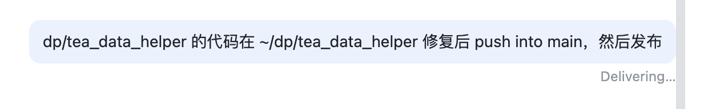
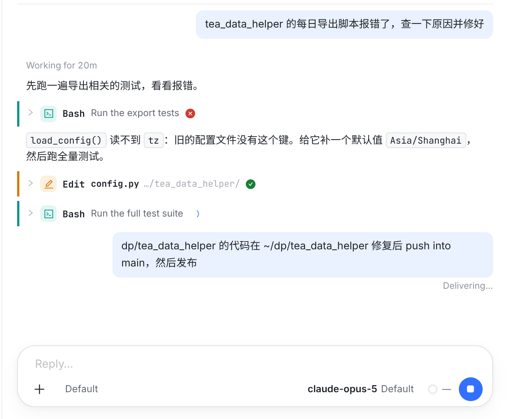
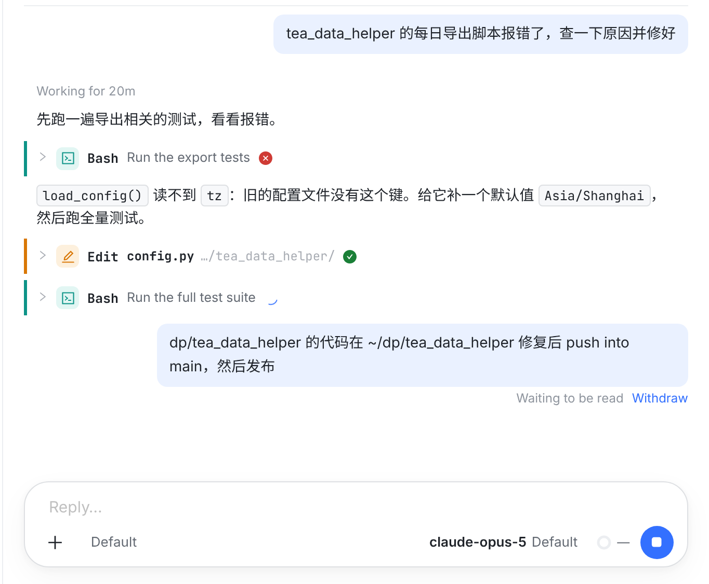
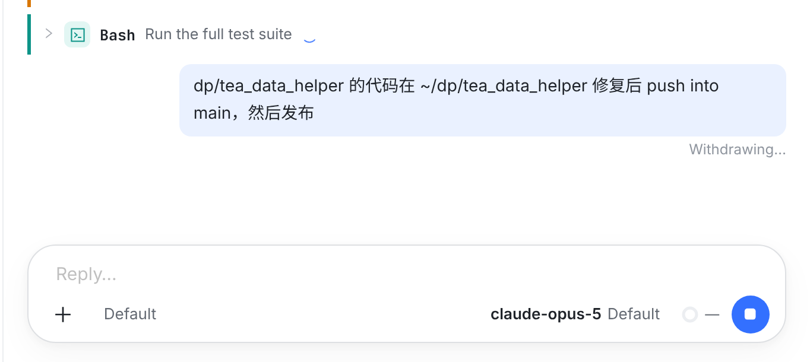
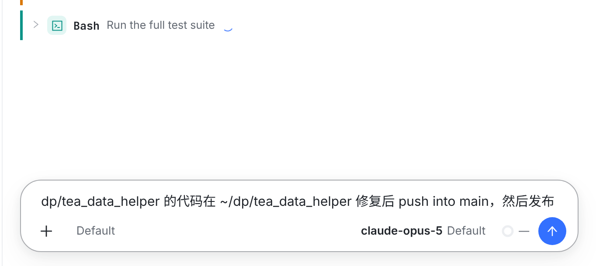
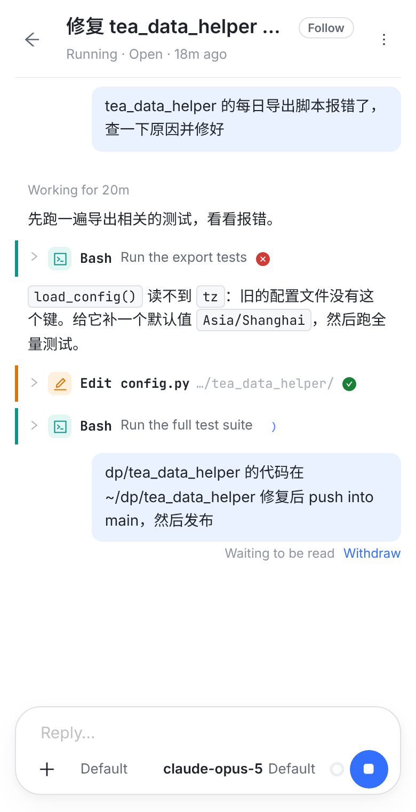
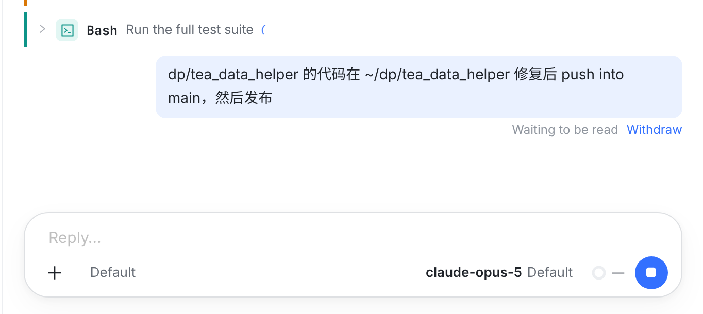
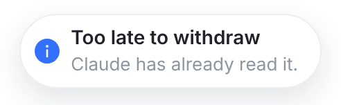

已定（2026-10-16）：按推荐落地。回合进行中发出的消息（steer）在模型读到之前可以撤回：Claude 会话里，runner 让 Claude 把它从队列里删掉，删没删成以 Claude 的回答为准；删掉的模型永远看不到，原文回到输入框。这一行的文案也一起改了：Delivering… → Waiting to be read，Sent into this turn → Read in this turn（理由见 02-copy.png）。
① 是改之前的页面；② 起每一张都是实现后的真实页面（本分支的 Web 代码 + 仓库 ui-migration 的 fixture，对话照你的截图造），点 Withdraw 走的是真实的处理函数，只有服务器的回答是桩。

cancel_async_message：消息还在它的队列里（模型没读）就删掉，删没删成它会明确回答。实测见最下面。turn/steer 交出去以后没有收回的接口，所以不显示 Withdraw。
Claude 在跑全量测试，中途发的消息停在 Delivering…，要等测试跑完才会被读到；这段时间里发现发错了、想改，都拿不回来。

2新增状态改叫 Waiting to be read，后面跟 Withdraw：和没送到时的 Put back in the composer 同一种链接。只在 runner 说这条可以收回（Claude，CLI 2.1.296 起）、且还没被读时出现；还没交给 runner 的 Sending… 在排队区里也有。

3变成 Withdrawing…，链接消失，不能重复点。Claude 本身是立刻回答的（实测 < 10 ms），等的是服务器和 runner 之间的来回；服务器最多等 15 秒。

4对话里不留这条（模型确实没看到它）；原文和图片回到输入框，输入框里已有草稿时接在草稿下面，不覆盖。runner 随后发 withdrawn，别的设备上这条也一起消失。

6同一行放得下。字号不变，点击区上下各扩 8px（实测 33px 高）。

5
窗口右上角的提示。
点下去的同时 Claude 正好把它读进了回合，Claude 回答「没删成」：提示 Too late to withdraw / Claude has already read it.，消息原样留着，回显一到就变成 Read in this turn。
| 消息下面写的 | 这时消息在哪 | Withdraw |
|---|---|---|
| Sending… | Orbit 收下了，还没交给引擎 | 显示。服务器直接删，任何引擎都行 |
| Waiting to be read（Claude） | 在 Claude 的队列里，模型还没读 | 显示。以 Claude 的回答为准 |
| Waiting to be read（Codex） | Codex 收下了 | 不显示：收不回 |
| Read in this turn | 模型读到了 | 不显示 |
| Not delivered | 没送到 | 不变：Put back in the composer |
| Queued for next turn | 排队等自己的回合 | 不变：Cancel |
DELETE /sessions/:id/turns/:turnId（和排队消息的 Cancel 同一个接口）。session-claude-steer-withdraw-v1 → 排一个 withdraw 控制 turn、唤醒 runner、等结果。Codex 或旧 runner → 409。cancel_async_message，按 steer 帧上的 uuid（就是 turn id）指名；Claude 回答 cancelled: true 才删行，false 就是已读。sleep 20，中途发两条，撤一条：cancelled: true，比工具结束早 16 秒；撤掉的那条没有回显、没进模型的回答，会话记录文件里也没有原文。cancelled: false。claude_withdraw.go（新）；claude_protocol.go steer 帧带 uuid；claude_delivery.go 回显按 uuid 对上、新状态 withdrawn；claude_control.go 撤回请求；session.go；transport.go 能力声明；测试（含假 CLI 的端到端）。sessions/steer-withdraw.ts（新）；sessions.service.ts 的 cancelQueuedTurn；runner-api.controller.ts 的 inbox 与结算；db-write-inventory.ts；单测与真 Postgres 的 pg spec。withdraw turn、结算子类型、结果与错误码、runner 能力。lib/steerDelivery.ts、Transcript.tsx、WorkspaceView.tsx、index.css；测试。SteerDelivery.swift（新文案、offersWithdraw）、Transcript.swift（withdrawable）、TranscriptReducer.swift（withdrawn 时拿掉气泡）；OrbitApp ConsoleModel.swift（withdrawSteer）、UserTurnRow.swift、MessageBubbles.swift、ConsoleView.swift；测试。BackgroundWakeCard.kt 只改文案（打字的消息下面没有投递状态行）。docs/codex-turn-steer-contract.md、docs/interactive-claude-runner-design.md。02-copy.png。